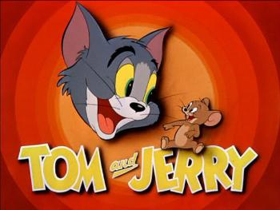

Tom and Jerry
Tom and Jerry is an American animated series of comedy short films created by William_Hanna and Joseph Barbera. It centers on a rivalry between the title characters Tom, a cat, and Jerry, a mouse.
The series features comic fights between an iconic pair of adversaries, a house cat (Tom) and a mouse (Jerry). The plots of each short usually center on Tom's numerous attempts to capture Jerry and the mayhem and destruction that follows. Tom rarely succeeds in catching Jerry, mainly because of Jerry's cleverness, cunning abilities, and luck.